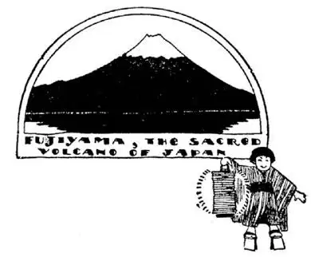
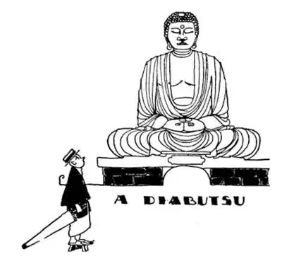
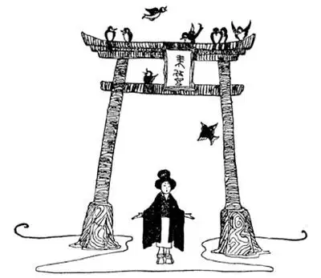
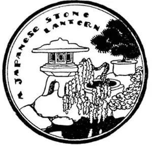

60
Picture Post-Cards
风景明信片

WHEN I came home from Japan I sent picture post-cards to all the Japanese school-boys who had given me their names. I had chosen cards that I thought would give them some idea of the size and importance of our country. One card had a picture of the Capitol at Washington, another Niagara Falls, another sky-scrapers in New York. In reply each boy wrote me a letter on thin rice paper and drew or painted or inclosed a picture of some scene or common sight in Japan.
Three of the pictures were of the same thing—a beautiful mountain with a snow-white top. It is the sacred mountain of Japan, called Fujiyama or just Fuji. It is really not a mountain at all but a burnt-out volcano, the top of which is covered with snow. You can see it from afar, and the Japanese love it so they put pictures of it on every conceivable thing they want to ornament—on fans, boxes, trays, umbrellas, lanterns, screens. No movie queen or famous beauty has ever had as many pictures made of her as have been made of Fuji.

日本的圣火山——富士山
There were two pictures of a huge bronze statue of Buddha seated out-of-doors in a grove of trees. It is so large that half a dozen people can sit on its thumbs. The eyes are of solid gold and more than a yard long, and in its forehead is a large ball of solid silver. They call it the Diabutsu. We might call it an idol, but the Japanese make statues of Buddha as we put up monuments to famous men and saints, and their statues of Buddha are to remind them that he was wise and good. His life was an example which even Christians might imitate.
Here are some of the other pictures which the Japanese boys sent me:
A street scene in Tokyo
Tokyo is the capital and largest city of Japan and one of the largest cities i. t. w. W. The old capital has exactly the same letters as Tokyo but arranged this way: Kyoto. If you say Tokyo twice you say Kyoto too—TO/KYOTO/KYO. Both Tokyo and Kyoto and all other Japanese cities look quite different from our large cities. There are no sky-scrapers, few buildings are more than two stories high, and most of them are built of bamboo. The reason for this is because the sea-serpent is still shaking himself almost every day, and they have so many earthquakes in these islands that tall houses would be shaken down. When an earthquake does come—and slight ones come almost every day and terrific ones every once in a while—the houses can easily be built up again. The chief damage done by the earthquakes, however, is the result of fires started when lights and stoves are upset. Then thousands of houses may be destroyed.

佛 像
It is to remind them that Buddha was wise and good
它提醒众人——佛祖是充满智慧和善的
There are a few big buildings that are built to withstand earthquakes. They are built on underground platforms of concrete instead of on the solid rock of the earth. This keeps them from being torn from their foundations when an earthquake shakes the ground; just as a big loose rock lying on the ground might be shaken but would not be broken apart.
A picture of a Japanese house
Japanese houses make fine bonfires, for they are not only made entirely of wood, but the windows are made of paper and the floors are covered with straw mats. The mats are not made to fit the floor, but the floors are made to fit the mats, which are all of the same size. The rooms are built to fit six mats, ten mats, and so on. In order to keep the mats clean, the Japanese take off their shoes whenever they enter their houses, and walk about the house in their stocking feet. Their stockings are like mittens with a place for the toe, and they would no more think of stepping on the mats with their shoes on than you would of getting into bed with your shoes on.
There are no chairs in a Japanese house, for the Japanese sit on the floor. For us it is very uncomfortable to sit on the floor for any length of time, but the Japanese prefer it, and I have seen them squatting on the floor in railway stations, although there were benches to sit on right alongside. I don’t know why, but I’ve often seen American girls sit on chairs with their feet up under them as if they were sitting on the floor. But I’ve never seen boys do it. Perhaps girls are part Japanese. The tables in a Japanese house have legs only a few inches high; they are really only trays like the bed trays we use when one is sick, and meals are served by placing such a tray in front of each person as he squats on his heels on the floor. There are no beds either; they sleep on the mats and cover themselves with a padded kimono for a comforter and use a hard wooden block for a pillow.
The Japanese are like elephants. In what way? I’ll give you three guesses. They bathe frequently. The Chinese, who seldom bathe, say the Japanese must be very dirty to need so many baths. But what seems to us peculiar, all the family, one after another, bathe in the same tub without changing the water. The tub is shaped like a sawed-off barrel in which there is room to sit but not to lie down. The water is piping hot “to open the pores.” After the bather has parboiled himself, he then climbs out and scrubs himself.
A picture of two Japanese carrying a big bucket on a pole which rests on their shoulders
In the tub—I couldn’t see them but I knew—there are live fish. The Japanese eat little meat, because they have few animals such as cows, sheep, or pigs from which meat is made, and because good Buddhists do not believe in eating meat anyway. But fish they do not call meat, and they catch and eat more fish than any other people in the World, even more than the people in Norway. As Japan is all islands, no one lives far from the sea, and fresh fish may be had all the time. Peddlers carry them alive in tubs of water so that the fish will be absolutely fresh.

A torll or Janpanese gate （神社前面的牌坊）
A picture of fields covered with water in which is growing rice
Rice is the chief and almost the only vegetable in Japan, and tea is the chief drink. Tea the Japanese drink without either sugar or cream. There are tea-houses and tea-gardens where waitresses called Geisha girls serve tea to customers and then entertain them by dancing and playing on long-necked musical instruments something like a banjo.
Another letter was ornamented with high wooden gateways called Torii, which you see everywhere in Japan, standing sometimes alone, sometimes in line. Torii means a bird rest. They are sacred gateways under which one passes to a temple or shrine.
Still another letter was illustrated with pictures of large stone lanterns such as you often see around Japanese temples and in their gardens. These lanterns give very little light, but they are much more ornamental than our lanterns, and the Japanese think more of beauty than they do of use. They even have a festival of lanterns—the paper kind that we use at garden parties.
Another letter contained a picture of three monkeys carved in wood in the greatest of all Japanese temples at Nikko. One monkey had his paws over his ears, the next over his mouth, and the third over his eyes, meaning: “Hear no evil, speak no evil, see no evil.”

A picture of two very fat men squatting on the ground and facing each other in the center of a huge building around which are sitting thousands of people watching
The two fat men are wrestlers. Wrestling is a national sport in Japan, as bull-fighting is a national sport in Spain and football is a national sport in the United States. There are two kinds of wrestling. One kind is done by giants weighing several hundred pounds, who wrestle before crowds such as gather to watch baseball or football games in this country. The wrestlers squat, facing each other like huge bullfrogs, and spend most of their time in this position, each watching for a chance to get a grip on the other. The game seems to an American simply one of watching and waiting, for once one gets “a hold” on the other the battle is usually over. Another kind of wrestling is called Jiu-jitsu. It is a trick wrestling, and a little chap, if he knows how, can throw a much larger and stronger person by catching his arm, hand, or leg and twisting it with a quick movement into certain positions that make it impossible for him to resist. I have seen in Japan whole schools lined up two and two, practising the various “throws” with lightning-like movements.
Wrestling is an old Japanese sport. The Japanese, however, copied new sports from other countries along with all the other things they copied. They copied baseball, and crowds at baseball games in Japan are as big as baseball crowds in the United States.
The last letter inclosed a photograph of the Emperor. Many countries have now changed from emperors to presidents but Japan, which has been quick to change in most things, I don’t believe ever will change to a president. The same family has been ruling in Japan for two thousand years. Even after being beaten in World War II, the Japanese were allowed by the other countries to keep their Emperor. Before this war the Japanese believed the Emperor was sacred as if he were a god. They still treat him with great respect but are no longer supposed to worship him.
【中文阅读】
我从日本回国后，就给那些想和我通信的日本男孩都寄了风景明信片。我特地挑选了一些明信片，这些明信片我认为可以让他们对美国的国土面积和国 际地位有所了解。一张明信片上的图画是华盛顿的国会大厦，另一张是尼亚加拉瀑布，还有一张是纽约的摩天大楼。每个男孩都用薄薄的米纸给我写了回信，有的用铅笔画了一幅画，有的用颜料画了一幅画，有的随信附上一张图片，上面画的都是日本风景或常见的景点。
有三张画是同一景物——一座美丽的山，山顶白雪皑皑，那是日本的圣山——叫做“富士山”，其实，它不是一座真正的山，而是一座死火山，山顶覆盖着白雪。人们远远地就能看见它。日本人非常喜欢富士山，他们将富士山的照片贴在他们想要装饰的任何一件东西上——扇子上、盒子上、托盘上、伞上、灯笼上、屏风上。没有哪位影后或名媛佳丽能像富士山那样让人拍了那么多的图片。
有两张画画的是一个巨大的青铜佛像，坐落在树丛中。青铜佛像非常大，仅两只大拇指就可以坐得下六个人。眼睛是用纯金做的，有1码多长，前额上有一个巨大的纯银制的球。他们把铜像称为“Diabutsu”，我们也许称其为偶像。日本人就像我们为名人或圣人竖立纪念碑一样制作佛像，是为了提醒自己，佛陀是充满智慧的、和善的，他的一生是个榜样，即使是基督徒也可以效仿。
以下是日本男孩寄给我的其他一些图画：
东京街景
东京（Tokyo）是日本的首都，是日本最大的城市，也是全世界最大的城市之一。日本过去的首都是京都（Kyoto），它的英文名字和东京的英文名字是由相同的字母组成的，只不过顺序不同。如果你说Tokyo两遍，你就说了Kyoto——TO/KYOTO/KYO。东京、京都，还有其他日本城市看起来与美国的大城市截然不同。日本城市没有摩天大楼，很少有建筑物在两层以上，大多数房屋都是用竹子建的，这是因为那条海蛇怪几乎每天会扭动它的身体，这些岛屿频繁发生地震，高楼都会被震塌。如果地震真的发生了——小地震几乎每天都发生，大地震每隔一段时间发生——房子也很容易重建起来。然而，地震造成的主要灾害是由于灯和炉子打翻而引发的火灾。发生火灾时，成千上万栋房子都会被烧毁。
日本也建了一些能够抗震的大型建筑物，它们建在地下的混凝土平台上，而不是直接建在地面坚硬的岩石上，这样会防止地震发生时建筑物在地基处断裂，就像一块躺在地上的松动的大石头一样，地震时它只会晃动，而不会裂开。
日本的房屋适合用作篝火的材料，因为它们不仅全是用木头做的，而且窗户是用纸做的，地板上还铺着用草编织的垫子。垫子不是按照地板的大小制作的，而是地板的规格要适合垫子的大小，而且所有垫子的大小是一致。房间的面积均按照六块草席的大小或十块草席的大小而设计的。为了保持草席清洁，日本人每次进屋前都会脱鞋，穿着袜子在室内行走；他们的袜子像连指手套，四脚趾相连与脚拇指分开。他们从不会想到穿着鞋子走在草垫上，正如你不会想到穿着鞋子上床一样。
日本人的房内没有椅子，因为日本人席地而坐。我们要是坐在地板上，哪怕是再短的时间，也会觉得非常不舒服。但是，日本人更喜欢席地而坐。我曾经看见他们蹲坐在火车站的地板上，尽管旁边就有长凳可以坐。也不知为什么，我常常看见美国女孩盘腿坐在椅子上，好像坐在地板上一样；但我从未看见男孩子这样坐。也许，美国女孩子有部分日本血统吧。日本人家里的桌子桌腿只有几英寸高。它们其实就像我们在有人生病的时候使用的床上托盘。一日三餐就是放在这样的一个桌子上，摆在跪坐者的前面。日本人室内也没有床。他们就睡在席子上，把衬里的和服当被子盖在身上，用一块硬木头当枕头。
日本人像大象。在哪个方面像呢？我让你猜三次。日本人勤洗澡。很少洗澡的中国人说，日本人一定很脏，才需要这么经常洗澡。但是，在我们看来，很奇怪的一点是，一家人洗澡用一个浴盆，一个人洗完另一个洗，中间不换水。澡盆的形状像个被锯了一截的大木桶，人在里面只能坐着不能躺下。洗澡水很烫，可以“使毛孔张开”。洗澡的人在滚热的水里泡上一段时间，然后爬出来，用力擦洗身体。
两个日本人用一根杆子抬着一个大水桶
画中那只桶里——虽然我看不见，但是我知道——有活鱼。日本人很少吃肉，因为日本国内像牛、羊、猪这样可以食用的动物很少；再加上，虔诚的佛教徒无论如何都不赞成吃肉。但是，他们认为鱼不是肉，所以，他们捕捉的和吃掉的鱼，是全世界最多的，甚至比挪威人还要多。因为日本是岛国，每个人离海都很近，所以始终都可以吃到新鲜的鱼。鱼贩将活鱼放在装满水的桶里，所以鱼是极其新鲜的。
水稻是日本主要的、也几乎是唯一的农作物。茶是主要的饮料。日本人喝茶不放糖，也不放牛奶。日本有很多茶馆或茶室，里面有叫“艺妓”的女服务员为顾客上茶，还跳舞、弹琴、弹奏乐器娱乐观众。她们弹的乐器有点像琴颈细长的班卓琴。
另一封信上的装饰画是一排高高的木牌坊，叫做“鸟居”。鸟居在日本随处可见，有时只有孤零零一个，有时则是一排。鸟居的意思就是“鸟休息的地方”。这些牌坊是通向寺庙和神殿的大门，所以是神圣的。
还有一封信上的插图画的是巨大的石灯笼，你常常在日本寺庙附近、或寺院内见到这种石灯笼。这些石灯笼发出的光很暗，但比我们的灯笼更具装饰性。日本人更看重石灯笼的美，而不是它们的用途。日本人甚至还有一个灯笼节——就是我们在游园会上使用的那种纸质灯笼。
另一封信里是一幅画，画的是三只用木头雕刻的猴子。这三只猴子在日光市最大的神社里。一只猴子用爪子捂住耳朵，另一只猴子用爪子捂着嘴巴，第三只猴子捂着眼睛，意思是“决不听邪恶的东西，决不说邪恶的东西，决不看邪恶的东西”。
在一个大型建筑物的中央，两个很胖的男人面对面蹲坐在地上，周围坐着成千上万观众
这两个胖男人是摔跤运动员。摔跤是日本的全民运动，就像斗牛是西班牙的全民运动、橄榄球是美国的全民运动一样。摔跤分两种，一种是参加摔跤的人都是体重达几百磅的高大魁梧的男人，观看比赛的人很多，就像美国人在观看棒球或橄榄球比赛一样。两名摔跤手像巨大的牛蛙一样面对面蹲伏着，大部分时间都保持这种姿势，各自都在寻找机会抓住对方。在美国人看来，这项运动，只不过是“观察和等待”，因为一旦一方抓住另一方，比赛也就结束了。另一种摔跤被称为“柔道”，它是一项技巧性很强的摔跤运动，就是一个瘦小的人，如果他知道其中的诀窍——通过抓住对手的胳膊、手、或腿，快速扭动到某个位置，使对手无法抵抗，即使对手比自己强壮高达，也会被摔倒在地。我在日本很多学校，看到全校学生排成队，两两一组练习各种摔倒对手的技巧，动作快如闪电。
摔跤是日本一项古老的运动。但是，日本人在向其他国家学习时，也学到 了一些新的运动项目。他们学会了打棒球。日本喜欢棒球运动的人一点也不少于美国人。
最后一封信里附上的是一张日本天皇的照片。许多国家已经将“皇帝”转变为“总统”，但是日本，尽管在很多方面变化很快，我却认为，不会将“皇帝”转变为“总统”。同一个天皇家族统治日本已有两千年之久了。甚至在第二次世界大战中战败之后，日本得到其他国家的许可，保留了天皇。在这场战争之前，日本人认为天皇是神圣的，把他当做神。现在，日本人仍然非常尊敬天皇，不过不再崇拜他了。